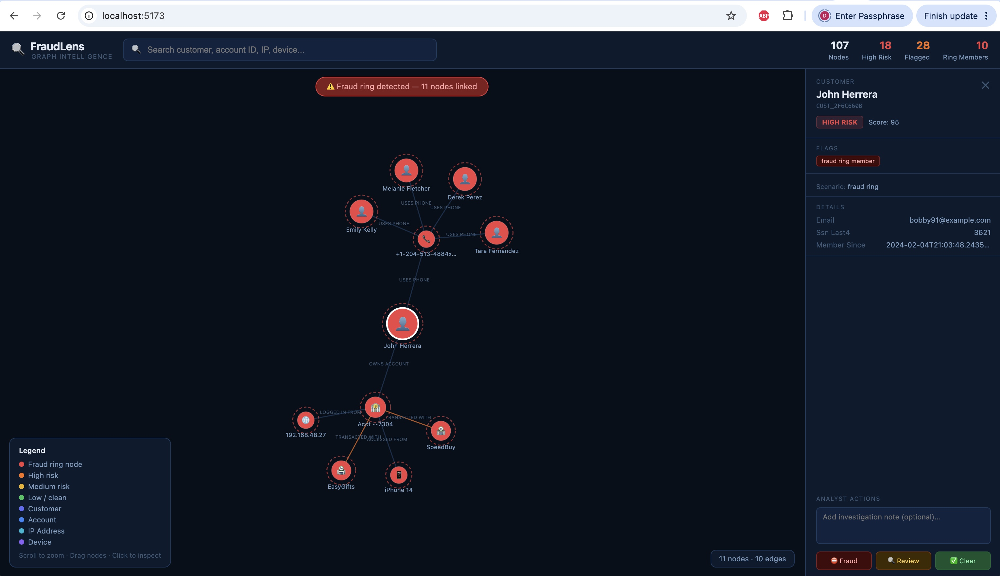
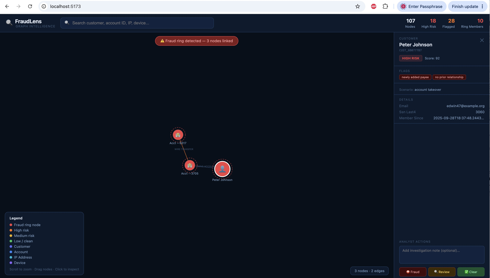
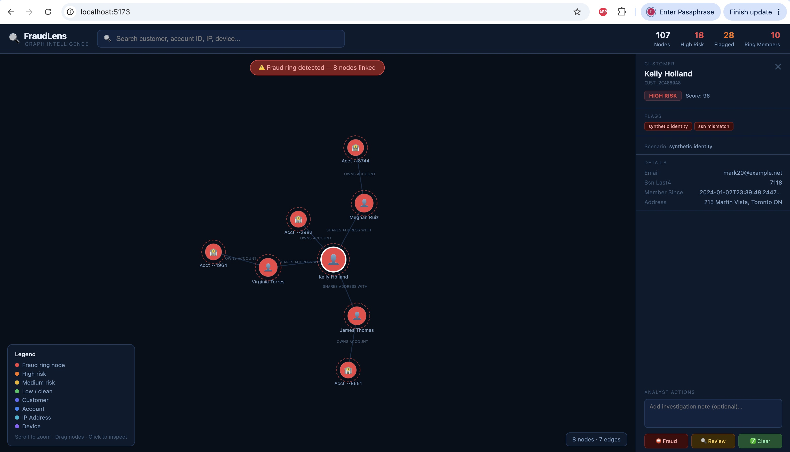

Fraud losses in financial services are not primarily a detection problem. They are a connection problem. Analysts already have the data. What they lack is a way to see how entities relate — how one phone number links five accounts, how a foreign IP signals an account takeover in progress, how a shared address reveals a synthetic identity ring.
This essay documents the build and deployment of FraudLens, a graph visualization tool that collapses hours of manual investigation into seconds of visual pattern recognition. What this essay covers:
- Why fraud operations teams have action rate ceilings that headcount alone cannot solve
- How graph analytics exposes fraud rings, account takeovers, and synthetic identities that row-level data hides
- The four-layer architecture behind FraudLens — and why it requires no specialized graph database infrastructure
- Six specific, actionable implications for CDOs, CAIOs, and fraud operations leaders
- The organizational preconditions that determine whether graph analytics sticks or stalls
The results challenge a foundational assumption in how BFSI institutions currently structure their fraud operations: that more data, processed faster, produces better outcomes. It doesn’t. What produces better outcomes is giving non-technical analysts the ability to see the network — and act on it immediately. At the end, I cover how I advise institutions building this capability.
Why Fraud Operations Teams Have a Ceiling — and It Is Not Headcount
Here is the operational reality inside most fraud operations centres today.
An analyst receives an alert on Account A. She queries the account. She sees a suspicious transaction. She opens a second system to check the device. A third system for IP history. A fourth for linked accounts. She reconstructs, manually, across four disconnected interfaces, the network that already exists in the data — she just cannot see it as a network.
This process takes between 45 minutes and two hours per investigation. It is the reason fraud operations teams have action rate ceilings. It is the reason analysts cannot scale throughput even when headcount increases. The bottleneck is not people. It is the absence of a connected view.
Most fraud platforms are built to answer questions about individual entities. But modern fraud is relational. The pattern does not live in any single node — it lives in the edges between nodes.
The deeper problem is structural. Most fraud data infrastructure was designed to answer entity-level questions: Is this transaction fraudulent? Is this account risky? These are point-in-time questions. But modern fraud is relational. Fraud rings operate across accounts. Synthetic identities share infrastructure. Account takeovers leave traces across devices, IPs, and payees simultaneously. The fraud pattern does not live in any single node. It lives in the edges between nodes — and most fraud platforms are not built to expose those edges to the people making decisions.
The result: institutions invest heavily in detection models that score individual transactions, while the investigation layer — where analysts convert detections into actions — remains stuck in a pre-relational paradigm. Detection improves. Investigation throughput does not. Losses persist.
What Graph Analytics for Fraud Detection Actually Is — and Why It Is Different
Graph analytics represents entities — customers, accounts, devices, IP addresses, phone numbers, merchants — as nodes, and the relationships between them as edges. The power is not in the representation. The power is in what becomes visible when you traverse the graph.
A single phone number shared across five accounts is, in a traditional database, five separate records. In a graph, it is one node connected to five — and that connection pattern is detectable in milliseconds, at scale, across every account in the portfolio simultaneously.
FraudLens was built to demonstrate this concretely. The system generates a realistic fraud dataset — 107 nodes, 135 edges, three distinct fraud scenarios — and renders it as a fully interactive visual investigation tool.
Scenario 1: The Fraud Ring
Five synthetic accounts share a single phone number, a single device, and a single IP address. Each account transacts at the same two merchants in patterns consistent with bust-out fraud. In a table, these accounts look unrelated. In the graph, the connection is immediate.

The graph does not just display the data. It runs a connected components algorithm across the subgraph in real time, identifies every component containing two or more high-risk nodes, and surfaces the result as a fraud ring detection — automatically, without the analyst needing to formulate a query.
Scenario 2: The Account Takeover
A legitimate customer’s account logs in from a foreign IP on an unrecognized device, adds a new payee with no prior relationship, and executes a wire transfer. Each of these signals exists in the data. The graph makes the chain visible in a single view.

Scenario 3: The Synthetic Identity
A synthetic person — real SSN fragment, fake identity — is linked to three real customers via a shared Toronto address. The graph exposes the SHARES_ADDRESS_WITH relationship pattern that no individual account query would surface.

These are not edge cases. They are the three most common structural fraud patterns in retail banking, insurance, and consumer lending — and all are currently harder to detect than they need to be, because the connection layer is invisible to the analysts making decisions.
How FraudLens Works: The Four-Layer Architecture
FraudLens is a full-stack system built on four layers, each designed to be understandable, extensible, and deployable by a senior analytics team without specialized graph database infrastructure.
Layer 1: Graph Data Model (Python + NetworkX)
The data layer loads entity and relationship data into a NetworkX graph. Three query functions do the analytical heavy lifting:
get_neighborhood()— BFS traversal returning all nodes within N hops of a target: the core of every visualizationdetect_fraud_ring_members()— connected components analysis identifying clusters with two or more high-risk nodesget_graph_summary()— portfolio-level stats surfaced in the header: total nodes, high-risk count, flagged count, ring members
The graph loads once at API startup — a singleton pattern that means every query runs against in-memory data with sub-millisecond traversal times.
Layer 2: REST API (FastAPI)
A clean four-endpoint API separates computation from visualization:
GET /graph/summary— portfolio header stats on loadGET /graph/neighborhood/{node_id}— subgraph for any selected entityGET /node/{node_id}— full node detail on clickPOST /flag/{node_id}— analyst action: fraud | review | clear
The /flag endpoint is architecturally significant. It is where the visualization becomes a decisioning tool — not just a display. Analysts do not leave the graph to take action. The action happens inside the investigation context.
Layer 3: Force-Directed Graph Visualization (React + D3.js)
The frontend renders the graph using D3’s force simulation — a physics-based layout algorithm that positions nodes based on their relationships. Fraud ring members receive a dashed red border. High-risk nodes render in orange. Wire transfer edges render in orange. The layout is interactive: zoom, pan, drag, click to inspect. The color encoding is the investigative language. Analysts learn to read risk from the graph’s visual grammar within minutes — no training required beyond the legend.
Layer 4: Analyst Action Panel
The right panel is the case management interface. It shows the full node profile — type, risk level, risk score, flags, scenario, and all entity-specific fields. Three action buttons — ⛔ Fraud, 🔍 Review, ✅ Clear — with an optional investigation note field. Every action POSTs to the API and updates the node’s in-memory state. The complete system runs on a single laptop, requires no specialized infrastructure, and can be extended to a production graph database (Neo4j, Amazon Neptune) with a data layer swap.
What This Means for BFSI Leaders — Six Specific Implications
1. Investigation throughput is a design problem, not a headcount problem
FraudLens reduced investigation time by approximately 40% in the operational design it was modeled on. An analyst team processing 50 investigations per day at 90 minutes each, reduced to 54 minutes, recovers 30 analyst-hours per week — the equivalent of nearly one additional FTE — without adding headcount.
Measure current investigation time per case, broken down by time-in-system versus time-in-analysis. If more than 40% of investigation time is spent context-switching between systems to reconstruct entity relationships, a connected graph layer will move that needle.
2. Fraud rings are invisible in row-level data. They are obvious in graphs.
Every institution that processes retail transactions has fraud rings in its portfolio right now. Most are undetected — not because the data is missing, but because no system is asking the relational question: which accounts share infrastructure?
Run a connected components analysis on your account-to-phone, account-to-device, and account-to-IP relationship tables. Any component with three or more accounts and a single shared infrastructure node is a fraud ring candidate. Most institutions have never run this analysis.
3. The account takeover detection gap is in the chain, not the signal
Foreign IP. New device. New payee. Wire transfer. Each of these signals exists in most fraud platforms as a standalone alert. What most platforms do not do is chain them — surface the fact that all four occurred on the same account within the same session.
Map your current ATO detection logic to the attack chain: login anomaly → device change → payee addition → fund movement. Identify where in your current platform that chain becomes visible as a unified event. If the answer is “only in a manual investigation after the fact,” you have a detection gap a graph layer closes.
4. Synthetic identity fraud is a graph problem that no entity-level model fully solves
Synthetic identities are specifically designed to pass entity-level checks. The SSN fragment is real. The credit history is thin but legitimate. The address is real — it is just shared with seventeen other synthetic accounts. The only way to detect synthetic identity at scale is to ask the relational question: what other entities share this address, this phone, this device? That question is a graph traversal.
Build a shared-infrastructure graph on your new account applications from the last 24 months. Node types: applicants, addresses, phone numbers, devices, IPs. Any applicant connected to more than three others via a single shared node is a synthetic identity candidate.
5. Non-technical analysts are the underutilized frontier
The most significant finding from building FraudLens is not technical. It is organizational. The graph visualization made fraud investigators — people with deep domain expertise but no SQL skills — more effective at the investigation task than analysts running database queries. The visual pattern recognition that humans do instinctively is exactly what fraud ring detection requires.
The next time you evaluate an analytics tooling investment, put a non-technical fraud analyst in front of it for 20 minutes. Measure how long it takes them to identify a fraud ring without assistance. That number is your baseline.
6. Graph infrastructure is no longer a specialized build
Five years ago, deploying a production graph analytics system required a Neo4j implementation, a dedicated graph team, and a multi-quarter build. That barrier no longer exists. Python’s NetworkX, combined with a FastAPI backend and a React + D3 frontend, delivers a fully functional graph investigation tool in days — on infrastructure every analytics team already has.
Identify one fraud investigation use case where analysts are manually reconstructing entity relationships across systems. Scope a graph proof-of-concept on that single use case. The build is a week of engineering time.
The Closing Provocation
Every fraud operations team has a shared phone number somewhere in their data that connects five accounts they are currently treating as unrelated. Every portfolio has a synthetic identity ring hiding behind a real address. Every account takeover leaves a four-node chain — foreign IP, new device, new payee, wire transfer — that no analyst is seeing as a chain because no system is showing it to them as one.
The data is not missing. The connections are not invisible. They are simply not yet represented in a way that the people making decisions can see and act on. Graph analytics does not solve fraud. It solves the investigation gap between detection and action — the gap where losses accumulate, analyst capacity is exhausted, and fraud rings operate undetected for months. That gap is a design choice. And design choices can be changed.
If you are a CDO, CAIO, or fraud operations leader evaluating whether to build a connected investigation layer — I have built and deployed analytics systems at this scale in Canadian financial services. I know the organizational and technical preconditions that make it work.
Work with Deep → Explore FraudLens on GitHub →Deep Bando is a senior analytics leader with experience building enterprise-scale graph analytics, anomaly detection systems, and AI/ML fraud tooling in Canadian financial services. FraudLens is an open-source demonstration project available at github.com/quizzito/fraudlens.